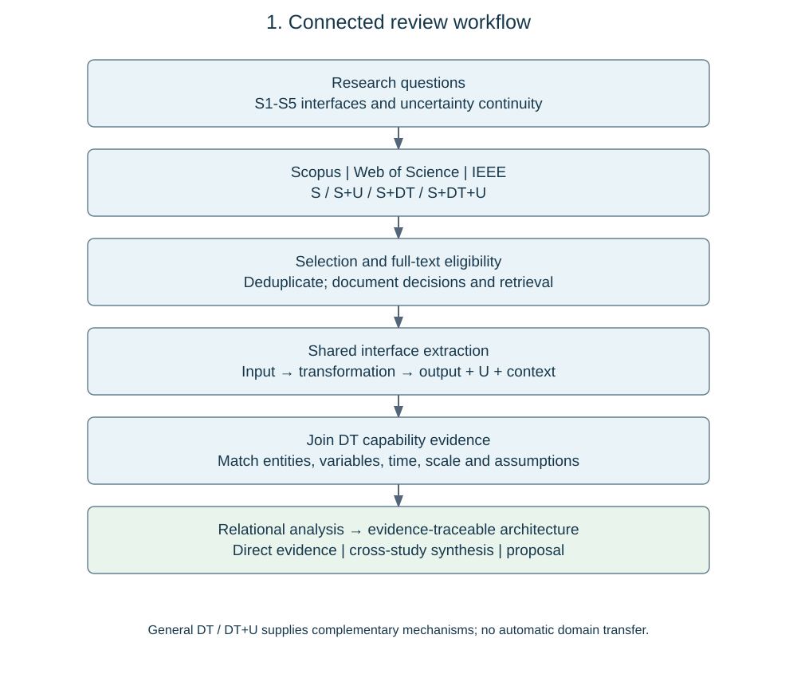
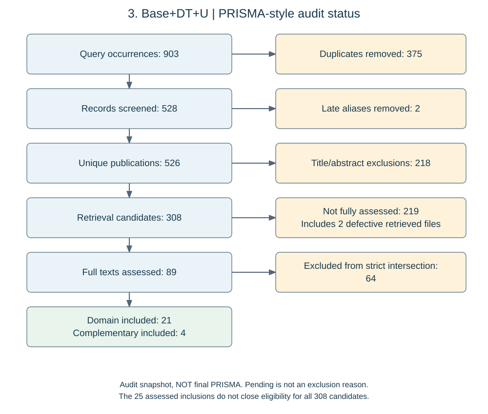
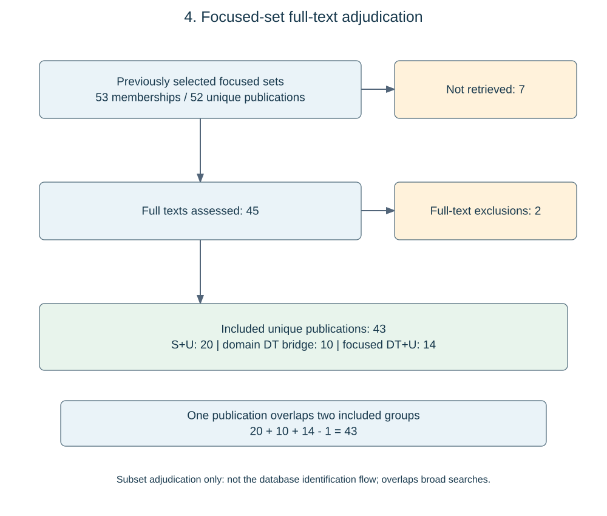

Understanding circular material opportunities in the built environment requires connecting information that is normally produced for different purposes. Spatial observations describe buildings, stock models estimate their material content, dynamic models estimate future releases, and recovery and environmental assessments evaluate what those releases might mean for subsequent use. Integrated studies provide a basis for examining this connected workflow. Mastrucci et al. (2017) link geospatial characterization of building material stocks with life cycle assessment of end-of-life scenarios, while Ajayebi et al. (2020) address the spatial and temporal quantification of structural products for a prospective circular economy. Pei et al. (2024) review the techniques and tools connecting building material stock analysis and urban-scale life cycle assessment. These contributions establish integration as a substantive research problem, although their system boundaries and treatment of individual transformations differ (Mastrucci et al., 2017; Ajayebi et al., 2020; Pei et al., 2024).
Comparison of these workflows motivates five analytical activities: observing and inferring building characteristics (S1), estimating material stocks (S2), modelling stock change and material outflows (S3), evaluating recovery and subsequent use (S4), and assessing environmental consequences and supporting decisions (S5). The labels are the organizing vocabulary of this review, rather than a five-stage architecture attributed to every cited study. They make it possible to compare equivalent transformations across different modelling traditions. Some studies combine activities, omit a transition, or iterate between them. Earlier geospatial frameworks also should not be retrospectively described as GeoAI implementations. GeoAI extends the observational part of this workflow through methods for interpreting spatial information, while geospatial and image-based demolition-waste modelling illustrates the connection between observation and material accounting (Wang et al., 2024; Bogoviku and Waldmann, 2021).
The significance of this decomposition lies in the information exchanged at the boundaries. At S1–S2, observed or inferred characteristics must be associated with a building type, material composition or intensity coefficient. At S2–S3, an inventory becomes an estimate of when and how much material is released. Research on building-size–material-intensity relationships and the importance of lifespan assumptions illustrates why these are substantive modelling operations rather than neutral transfers of numbers (Miatto et al., 2023; Miatto et al., 2017). A downstream estimate may depend on the same uncertain classification or parameter as an upstream estimate. Treating those estimates as independent can therefore change the meaning of the combined assessment.
The next boundary introduces a different question: an estimated outflow is not necessarily an available secondary resource. Material-passport research examines information for end-of-life management, while probabilistic reusability assessment addresses the technical suitability of components (Honic et al., 2021; Rakhshan et al., 2021). These approaches locate information needs between release and subsequent use. Recovery conditions, separation, quality and allocation to a reuse or recycling route need to be represented before environmental consequences can be interpreted. Studies comparing environmental assessment methods for component reuse further show the importance of how subsequent use is represented (De Wolf et al., 2020). S3–S4 and S4–S5 are consequently useful analytical boundaries even where one model calculates several of these activities together.
Uncertainty must be interpreted within this chain of transformations. Michiels and Geeraerd (2020) distinguish incomplete knowledge from variability when examining how these influences are propagated and visualized in life cycle assessment (Michiels and Geeraerd, 2020). For this review, the distinction matters because variation among buildings, uncertainty about an inferred building attribute and alternative future recovery scenarios do not have interchangeable meanings. A probability distribution, an interval, a set of scenarios and a qualitative data-quality description also communicate different kinds of information. An assessment may quantify uncertainty carefully within one model without preserving that representation when its output becomes another model's input.
We use uncertainty continuity to describe the traceable retention or explicit revision of uncertainty information, relevant dependencies and conditions of validity across such transformations. This is an analytical construct of the present review, not a claim that existing studies use a common term or that uncertainty must remain numerically unchanged. Propagation may alter an output distribution; new observations may support updating; aggregation may change the spatial support; and a recovery decision may convert a continuous quantity into an eligibility category. Conversely, an interval may be replaced by a point estimate, or the provenance needed to interpret it may not be reported. The relevant distinction is whether this change is documented and usable downstream. Missing reporting alone does not demonstrate that information was lost in the actual implementation.
Digital twins provide a related body of research on connections between physical entities, digital representations and updating processes. Jones et al. (2020) characterize the concept through a systematic literature review, while Boje et al. (2020) develop directions for semantic construction twins (Jones et al., 2020; Boje et al., 2020). Construction-focused reviews examine applications and enabling technologies (Opoku et al., 2021; Tuhaise et al., 2023). Together, these studies make it useful to examine the functions associated with a digital twin, rather than infer capabilities from its name. A geometric model may represent an asset without maintaining a data connection; an updated representation may support monitoring without implementing probabilistic propagation; and a conceptual architecture may describe services that have not been demonstrated operationally.
Definition differences are particularly relevant to the built environment. Abdelrahman et al. (2025) compare definitions and components across domains and distinguish high-performance real-time twins from long-term decision-support twins (Abdelrahman et al., 2025). Their analysis cautions against treating real-time operation, bidirectional exchange and predictive functionality as equally mature or universally required across applications. For material-flow assessment, the appropriate update may occur after a survey, renovation or change in recovery conditions. The methodological question is whether the timing and content of that update preserve the validity of the connected assessment, not simply whether a continuous sensor stream exists.
Research on uncertainty-aware twins offers mechanisms for investigating this question. Kapteyn et al. (2021) formulate coupled asset–twin dynamics using a probabilistic graphical model and demonstrate calibration and updating in an aircraft-related application (Kapteyn et al., 2021). Lin et al. (2021) review uncertainty quantification and software risks in digital-twin-based management and control (Lin et al., 2021). These studies support examination of probabilistic state representation, dependencies and updating as architectural capabilities. They do not establish that the same mechanisms already provide uncertainty continuity from building observation to circular material decisions. Their relevance must be assessed against the entities, quantities, temporal processes and validation conditions of the target workflow.
The three bodies of literature therefore meet at the interfaces between activities. Material-flow studies identify the quantities and transformations that require continuity; uncertainty research explains what must be retained or revised; and digital-twin research offers ways to connect representations, observations and analytical services. Spatial scale, temporal validity and stakeholder information requirements condition these connections. The existence of a scalable software structure, for example, does not itself demonstrate that the underlying material assumptions remain valid across buildings, districts and regions. Similarly, a dashboard can communicate an uncertainty estimate without establishing how it was obtained or propagated.
Existing reviews provide complementary foundations: Pei et al. (2024) examine stock–LCA integration, Michiels and Geeraerd (2020) examine uncertainty and variability, and Abdelrahman et al. (2025) examine DT definitions and components (Pei et al., 2024; Michiels and Geeraerd, 2020; Abdelrahman et al., 2025). The present review brings these perspectives into a common interface-based comparison. It asks which uncertainty-related connections are directly documented, which can be synthesized from compatible studies, and which remain proposals responding to identified limitations. The intended contribution is an evidence-traceable architectural synthesis. It does not presume that all transitions are missing from prior work, nor does it present a newly implemented or validated end-to-end digital twin.
The review connects evidence on material-assessment workflows, uncertainty and digital-twin capabilities through a shared analytical unit: a documented interface between activities. Search families provide complementary routes to this evidence, rather than separate reviews with unrelated conclusions. The design addresses four linked questions: which transformations connect S1–S5; what happens to uncertainty at those transformations; which DT capabilities are relevant under the reported conditions; and how the findings support an evidence-traceable architecture. PRISMA 2020 guides reporting of study selection and PRISMA-S guides documentation of searches (Page et al., 2021; Rethlefsen et al., 2021). These reporting guidelines do not replace the extraction and synthesis procedures specified below.
For publication p and interface i→j, the extraction record is E(p,i,j) = {entity, input, transformation, output, uncertainty-in, uncertainty-out, dependencies, DT-function, context, evidence}. Entity identifies the building, component or material represented; context includes spatial support, temporal validity and information-user requirements; evidence contains the publication identifier and page, section, equation or figure locator. DT-function is recorded as not applicable or not reported where appropriate. Thus a non-DT material-flow study and a DT mechanism study can be compared through an explicit information requirement without claiming that they implement the same system. Figure 1 shows this connected workflow; Figure 2 specifies the analytical joins.
The database searches cover Scopus, Web of Science Core Collection and IEEE Xplore. Base, also denoted S, refers to stage-specific building/material-flow searches. U denotes uncertainty and DT denotes digital twin. The domain families are Base, Base+U, Base+DT and Base+DT+U. General DT and DT+U searches provide definition and transferable-mechanism evidence, with their non-domain origin retained. Supplementary searches for integrated workflows are not restricted by publication year or publisher. Exact filters are documented per search execution rather than assumed identical across historical runs.
Scopus searches use TITLE-ABS-KEY; Web of Science searches use Topic, which also includes Keywords Plus. IEEE field selections and split-query variants are retained in the execution records. The logical search structure is Q(i,k) = B(i,k) AND S(i) AND optional(U) AND optional(DT), where k identifies the query version. The version index matters because some historical DT searches use a broader domain block than earlier Base searches. The logical diagram is therefore not evidence that every historical query forms a strict subset of one identical Base query.
Table 1 lists the concepts used to organize retrieval. The complete archived strings, including exclusions and database adaptations, remain in Supplement S1 and the recovered S1–S3 query files. Missing historical execution details are flagged in the audit rather than reconstructed as executed searches. New explanatory examples in this section are not presented as additional database searches.
| Block | Search concepts and examples |
| Domain B | building stock*, existing building*, built environment, material cadastre*, resource cadastre* |
| S1 | GeoAI, remote sensing, computer vision, LiDAR, point cloud*, building geometry, building classification |
| S2 | material stock*, material inventor*, material intensit*, material composition, building archetype*, quantity takeoff |
| S3 | material flow*, dynamic stock*, stock turnover, service life, building lifetime*, demolition timing, material outflow* |
| S4 | reuse, recycl*, recover*, deconstruction, urban mining, disassembl*, secondary material*, reverse logistics |
| S5 | life cycle assessment, embodied carbon, environmental impact*, carbon footprint, decision support |
| DT | "digital twin" OR "digital twins" |
| U | uncertaint*, probabil*, stochastic*, Bayesian, "Monte Carlo", sensitiv*, variabil*, calibrat*, robust*, prediction/confidence intervals |
For clarity, the four domain combinations are B AND S(i); B AND S(i) AND U; B AND S(i) AND DT; and B AND S(i) AND DT AND U. General DT+U omits the building-stage restriction. Broad U terms improve retrieval but do not establish uncertainty analysis: sensitivity, calibration or robustness must be interpreted from the methods. Membership is recorded at publication level after deduplication. Actual overlaps are calculated from identifiers, not inferred from query labels or summed database counts (Rethlefsen et al., 2021).
Each publication is screened against its intended evidential role. Domain studies must describe a relevant activity or transformation in building-material assessment. U evidence must identify an affected quantity, assumption or decision and explain its treatment; a generic uncertainty statement is insufficient for a mechanism claim. DT evidence must describe representations, data connections, updating or analytical functions. Architecture papers can provide conceptual evidence without being relabelled operational implementations. External-domain mechanisms and secondary reviews are retained separately as complementary evidence. A paper need not address all five stages or demonstrate successful uncertainty continuity to be relevant.
Original database exports are preserved. DOI values are normalized; records without DOI are checked using native identifiers and bibliographic information. Similar titles, conflicting DOIs and related conference/journal versions require adjudication. Duplicate publications are distinguished from multiple reports of one study. Multiple search memberships are retained without multiplying the unique-publication denominator.
Selection proceeds through identification, deduplication, title/abstract screening, full-text retrieval, full-text eligibility and inclusion. Full text is checked for identity, completeness and methodological detail. Abstract-only material and incomplete previews do not support full-text mechanism extraction. Reports that cannot be obtained or adequately assessed do not enter the final synthesis. Their records remain in the selection audit: non-retrieval is distinguished from exclusion after assessment, and available but unread reports remain pending rather than being assigned a scientific exclusion reason. No target number of included publications is imposed.
Full-text exclusions have a primary reason, with secondary notes where needed: outside the material-flow domain; no relevant DT function for a DT-specific synthesis; no substantive U treatment for a U-specific synthesis; or insufficient methodological evidence for the intended analytical role. A report can be ineligible for the strict triple intersection while remaining relevant to a complementary stream. Reasons and evidence locators are preserved. PRISMA reporting follows these distinctions (Page et al., 2021).
Stage assignment is based on the operation actually performed. An edge S(i)→S(j) requires a documented use of an upstream output in a downstream activity; mentioning two stages does not establish an edge. Non-adjacent links and feedback are retained. Table 2 defines the common questions applied across the four adjacent interfaces. These are extraction prompts, not findings that every study implements the listed transformations.
| Interface | Transformation to inspect | Uncertainty information to trace | Candidate DT function to investigate |
| S1→S2 | Observations/attributes to material quantities | Classification uncertainty, geometry, material intensities and their dependencies | Identity, semantic mapping, provenance and data-quality representation |
| S2→S3 | Inventory to time-dependent release | Inventory uncertainty, lifetimes, survival and scenario dependencies | State/time representation, linked dynamic models and versioning |
| S3→S4 | Released material to recoverable supply | Timing, condition, separation yield, quality and route eligibility | Condition updates, component tracking and recovery-service linkage |
| S4→S5 | Recovery routes to impacts/decision | Yield, substitution, allocation, impact factors and joint assumptions | Assessment-service coupling, scenario provenance and decision communication |
The extraction distinguishes uncertainty source, nature, representation and operation. Parameter, model and scenario uncertainty are recorded separately from spatial/temporal variability where the study permits this distinction (Michiels and Geeraerd, 2020). Representations include distributions, samples, intervals, scenarios and qualitative quality statements. Dependencies include reported covariance, correlation, shared parameters and explicit independence assumptions. Missing dependence information is not coded as independence.
The interface state uses non-exclusive operation codes: transferred, transformed, updated, newly introduced, or demonstrably discarded. A separate reporting status identifies insufficient description. Reduced uncertainty requires a stated comparison and metric; improved prediction accuracy alone does not establish reduction. Source statements are distinguished from reviewer interpretation. Each mechanism claim requires a locator and a short evidence note. Scale, temporal resolution, update trigger, validity period and stakeholder information roles are extracted as conditions of the interface, not as disconnected descriptive categories.
DT coding records the authors' definition, physical referent, digital representation, data connection, update direction/frequency, analytical service and demonstrated maturity (Jones et al., 2020; Boje et al., 2020; Abdelrahman et al., 2025). Real-time operation and bidirectional control are not imposed as universal requirements. Nor is a BIM/GIS model automatically treated as an operational DT. The distinction between probabilistic modelling and demonstrated asset–twin updating is informed by uncertainty-aware DT research (Kapteyn et al., 2021; Lin et al., 2021).
For each interface, an evidence chain links: observed limitation → information requirement → reported DT capability → compatibility conditions → supported architectural connection. Compatibility is checked against the entity, variable meaning, unit, spatial support, temporal horizon and dependency representation. For example, a general-domain Bayesian updating mechanism is not assigned to S3–S4 merely because both involve uncertainty; the proposed connection must explain what recovery-related state would be updated, by which observation and under which assumptions. If that connection is inferred across studies, it is explicitly coded as synthesis rather than a demonstrated domain implementation.
The same interface records generate three connected matrices: interface × uncertainty operation; interface × DT capability; and DT capability × uncertainty operation. Every populated cell resolves to supporting publication and evidence identifiers. A fourth join table links all three dimensions and records whether the connection occurs within one study or is synthesized across studies. No complete S1–S5 chain is inferred simply by concatenating unrelated papers. Figure 2 shows the shared record that prevents the three matrices from becoming independent analyses.
For a given eligible corpus C, the cell count is n(i,u,d) = the number of distinct publications in C supporting interface i, uncertainty operation u and DT capability d together. Direct within-publication counts and cross-study synthesis are reported separately; inferred links do not inflate empirical frequencies. Coverage of a coded property is its distinct supporting-publication count divided by the number of eligible, assessed publications for that analysis. The denominator and unreported cases accompany each figure. Multilabel coding means marginal totals can exceed the unique-publication total. This treatment follows the need to distinguish study counts from category participation, illustrated in Falsafi et al. (2025) (Falsafi et al., 2025).
Descriptive outputs include evidence heatmaps, overlap plots and interface networks. A line represents a coded connection, not causality; thickness represents a specified count, not effectiveness. Temporal counts summed across databases are labelled database occurrences unless record-level deduplication supports unique-publication counts. Statistical tests are not assumed valid for overlapping categories, and visual differences are not labelled significant without an appropriate test design. Heterogeneous outcomes are not pooled in an effectiveness meta-analysis.
Architectural elements are classified as directly supported, synthesized from compatible studies, or proposed in response to a documented gap. The architecture thus links each module and connection to its evidential basis and to the interface requirement it addresses. A reported limitation, missing reporting and an absence in the retrieved corpus remain distinct. The resulting structure is a review-based conceptual synthesis; operational effectiveness and cross-scale generalization require subsequent validation.
Appraisal considers data provenance, explicit assumptions, dependency treatment, validation, scenario conditions and reproducibility. Synthetic demonstrations, empirical tests and conceptual proposals are distinguished. A universal numerical quality score is not imposed on heterogeneous designs. The decision ledger retains source, role, eligibility reason and evidence locator, while code and count inputs accompany figures. The review does not claim an independent two-human-reviewer process where none is documented.
Figure 3 is an audit-status PRISMA-style diagram for the broad Base+DT+U search, not a completed all-scenario selection flow. Its counts are read from the archived decision ledgers. Figure 4 reports adjudication within the previously selected focused sets; these are subsets with overlapping membership, not additional independent searches. The broader Base, Base+U, Base+DT and general-DT workflows cannot yet be labelled complete through Included. Pending reports are excluded from current substantive synthesis but remain visible as pending in the audit. Completion of those decisions is required before replacing these status diagrams with final submission-ready PRISMA flows. This status statement is editorial and must be updated when the review is closed, rather than removed while the work remains incomplete.



TITLE-ABS-KEY(("building stock*" OR "building material stock*" OR "urban material stock*" OR "built environment stock*" OR "building inventor*" OR "building archetype*" OR "material cadastre*" OR "resource cadastre*" OR "existing building*" OR "building portfolio*" OR "urban building*" OR "built stock*") AND (reuse OR recycl* OR recover* OR deconstruction OR "urban mining" OR "secondary material*" OR "material passport*" OR matching OR logistics OR separab* OR disassembl* OR circular* OR "reverse logistics") AND (uncertaint* OR probabil* OR stochastic* OR Bayesian OR "Monte Carlo" OR sensitiv* OR variabil* OR calibrat* OR robust* OR "decision confidence" OR "value of information" OR "prediction interval*" OR "confidence interval*"))Full archived queries: Supplement S1; this example does not redefine historical searches.
Abdelrahman, Mahmoud; Macatulad, Edgardo; Lei, Binyu; Quintana, Matias; Miller, Clayton; Biljecki, Filip. 2025. What is a Digital Twin anyway? Deriving the definition for the built environment from over 15,000 scientific publications. Building and Environment. https://doi.org/10.1016/j.buildenv.2025.112748
Ajayebi, Atta; Hopkinson, Peter; Zhou, Kan; Lam, Dennis; Chen, Han-Mei; Wang, Yong. 2020. Spatiotemporal model to quantify stocks of building structural products for a prospective circular economy. Resources, Conservation and Recycling. https://doi.org/10.1016/j.resconrec.2020.105026
Bogoviku, Lorenc; Waldmann, Danièle. 2021. Modelling of mineral construction and demolition waste dynamics through a combination of geospatial and image analysis. Journal of Environmental Management. https://doi.org/10.1016/j.jenvman.2020.111879
Boje, Calin; Guerriero, Annie; Kubicki, Sylvain; Rezgui, Yacine. 2020. Towards a semantic Construction Digital Twin: Directions for future research. Automation in Construction. https://doi.org/10.1016/j.autcon.2020.103179
De Wolf, Catherine; Hoxha, Endrit; Fivet, Corentin. 2020. Comparison of environmental assessment methods when reusing building components: A case study. Sustainable Cities and Society. https://doi.org/10.1016/j.scs.2020.102322
Falsafi, Amirmehrab; Togiani, Amir; Colley, Ashley; Varis, Juha; Horttanainen, Mika. 2025. Life cycle assessment in circular design process: A systematic literature review. Journal of Cleaner Production. https://doi.org/10.1016/j.jclepro.2025.146188
Honic, Meliha; Kovacic, Iva; Aschenbrenner, Philipp; Ragossnig, Arne. 2021. Material Passports for the end-of-life stage of buildings: Challenges and potentials. Journal of Cleaner Production. https://doi.org/10.1016/j.jclepro.2021.128702
Jones, David; Snider, Chris; Nassehi, Aydin; Yon, Jason; Hicks, Ben. 2020. Characterising the Digital Twin: A systematic literature review. CIRP Journal of Manufacturing Science and Technology. https://doi.org/10.1016/j.cirpj.2020.02.002
Kapteyn, Michael G.; Pretorius, Jacob V. R.; Willcox, Karen E.. 2021. A probabilistic graphical model foundation for enabling predictive digital twins at scale. Nature Computational Science. https://doi.org/10.1038/s43588-021-00069-0
Lin, Linyu; Bao, Han; Dinh, Nam. 2021. Uncertainty quantification and software risk analysis for digital twins in the nearly autonomous management and control systems: A review. Annals of Nuclear Energy. https://doi.org/10.1016/j.anucene.2021.108362
Mastrucci, Alessio; Marvuglia, Antonino; Popovici, Emil; Leopold, Ulrich; Benetto, Enrico. 2017. Geospatial characterization of building material stocks for the life cycle assessment of end-of-life scenarios at the urban scale. Resources, Conservation and Recycling. https://doi.org/10.1016/j.resconrec.2016.07.003
Miatto, Alessio; Schandl, Heinz; Tanikawa, Hiroki. 2017. How important are realistic building lifespan assumptions for material stock and demolition waste accounts?. Resources, Conservation and Recycling. https://doi.org/10.1016/j.resconrec.2017.01.015
Miatto, Alessio; Fasanella, Ygor; Mainardi, Marta; Borin, Paolo. 2023. Correlation between building size and material intensity in residential buildings. Resources, Conservation and Recycling. https://doi.org/10.1016/j.resconrec.2023.107093
Michiels, Freya; Geeraerd, Annemie. 2020. How to decide and visualize whether uncertainty or variability is dominating in life cycle assessment results: A systematic review. Environmental Modelling \& Software. https://doi.org/10.1016/j.envsoft.2020.104841
Opoku, De-Graft Joe; Perera, Srinath; Osei-Kyei, Robert; Rashidi, Maria. 2021. Digital twin application in the construction industry: A literature review. Journal of Building Engineering. https://doi.org/10.1016/j.jobe.2021.102726
Page, Matthew J.; McKenzie, Joanne E.; Bossuyt, Patrick M.; others. 2021. The PRISMA 2020 statement: an updated guideline for reporting systematic reviews. BMJ. https://doi.org/10.1136/bmj.n71
Pei, Wanyu; Biljecki, Filip; Stouffs, Rudi. 2024. Techniques and tools for integrating building material stock analysis and life cycle assessment at the urban scale: A systematic literature review. Building and Environment. https://doi.org/10.1016/j.buildenv.2024.111741
Rakhshan, Kambiz; Morel, Jean-Claude; Daneshkhah, Alireza. 2021. Predicting the technical reusability of load-bearing building components: A probabilistic approach towards developing a Circular Economy framework. Journal of Building Engineering. https://doi.org/10.1016/j.jobe.2021.102791
Rethlefsen, Melissa L.; Kirtley, Shona; Waffenschmidt, Siw; others. 2021. PRISMA-S: an extension to the PRISMA Statement for Reporting Literature Searches in Systematic Reviews. Systematic Reviews. https://doi.org/10.1186/s13643-020-01542-z
Tuhaise, Valerian Vanessa; Tah, Joseph Handibry Mbatu; Abanda, Fonbeyin Henry. 2023. Technologies for digital twin applications in construction. Automation in Construction. https://doi.org/10.1016/j.autcon.2023.104931
Wang, Siqin; Huang, Xiao; Liu, Pengyuan; Zhang, Mengxi; Biljecki, Filip; Hu, Tao; Fu, Xiaokang; Liu, Lingbo; Liu, Xintao; Wang, Ruomei; Huang, Yuanyuan; Yan, Jingjing; Jiang, Jinghan; Chukwu, Michaelmary; Reza Naghedi, Seyed; Hemmati, Moein; Shao, Yaxiong; Jia, Nan; Xiao, Zhiyang; Tian, Tian; Hu, Yaxin; Yu, Lixiaona; Yap, Winston; Macatulad, Edgardo; Chen, Zhuo; Cui, Yunhe; Ito, Koichi; Ye, Mengbi; Fan, Zicheng; Lei, Binyu; Bao, Shuming. 2024. Mapping the landscape and roadmap of geospatial artificial intelligence (GeoAI) in quantitative human geography: An extensive systematic review. International Journal of Applied Earth Observation and Geoinformation. https://doi.org/10.1016/j.jag.2024.103734